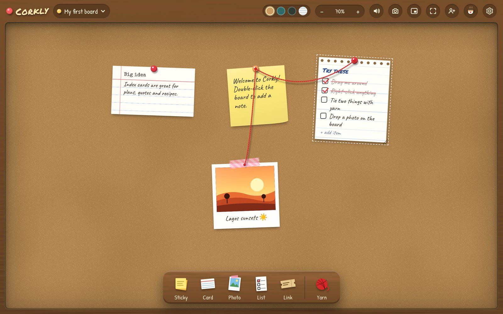
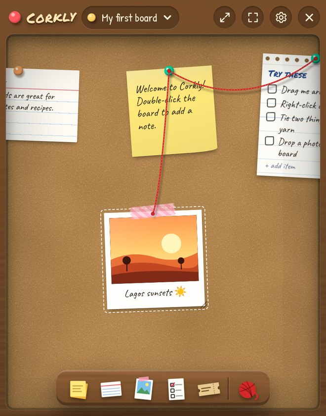

Your desk,
but pinned.
A playful cork board that lives on your desktop. Sticky notes, polaroids, checklists, links — tied together with red yarn.

Things you can pin
Sticky notes
Six colours, handwriting font, double-click anywhere to add one.
Polaroids
Drop or paste a photo and it becomes a polaroid with a caption and washi tape.
Checklists
Tick everything off and get a DONE! stamp and a burst of confetti.
Red yarn
Connect ideas detective-board style. The string sags and bounces when you move things.
Shared boards
Invite a friend with a code and they can pin notes and photos straight onto your board.
Link tickets
Paste a link and it turns into a little admission ticket. Click to open.
Lives on your desktop

Small, always there
- Shrinks into a widget in the corner of your screen
- Opens by itself when your computer starts
- Hide the toolbars — just the board, nothing else
- Show or hide it from anywhere with one shortcut
- Your boards stay on your computer unless you share them
Install help
On a Mac
- Open the
.dmgand drag Corkly into Applications. - Open Corkly. If macOS says it can't check the developer, go to System Settings → Privacy & Security, scroll down and click Open Anyway. You only do this once.
- If it says Corkly "is damaged", open Terminal and run
xattr -cr /Applications/Corkly.app, then open it again.
On Windows
- Run
Corkly-Setup.exe. - If Windows shows "Windows protected your PC", click More info → Run anyway.
- Corkly updates itself after that.
Is it really free?
Yes. If Corkly makes your desk happier, you can buy me a coffee — that's what keeps the pins coming.